PailitaoMMSearch2.0：从固定场景检索到统一多模态商品搜索
这篇技术报告来自阿里巴巴淘天集团，Xiaohan Ye 为第一作者，Xu Chen 为通讯作者及项目负责人。论文于 2026 年 10 月 27 日首次公开，本笔记于 10 月 29 日核对原始全文。论文入口：PailitaoMMSearch2.0 Technical Report。本轮未核验到本文独立代码、模型或数据发布入口，论文中的引用实现不作为本系统开源证据。
现有工业生成式检索通常依赖某个入口的交互监督、固定的检索关系和单一服务资源配置，难以复用到开放的图文查询、异质购物意图和不同延迟预算。本文研究如何解除这些耦合，让统一模型从原始图像与自由指令直接生成商品标识。
1. 背景和问题
生成式检索把商品编码成离散标识序列，让模型根据请求依次生成标识，从而定位目录中的具体商品。与先计算查询向量、再搜索向量索引的路径相比，这种形式把部分目录知识和查询到商品的映射写进参数，也让相近商品共享前缀表达。本文使用三级语义标识，每一级码本有八千一百九十二项，生成合法的三级序列后才能映射回商品。这个接口并不意味着模型可以凭空创造目录之外的商品，也不意味着只生成一个最优答案；实际服务通过束搜索得到多个候选，候选集合的质量才与用户看到的检索结果相连。
工业系统的难点在于，同一个技术形式进入不同产品入口以后，往往重新变成若干彼此分离的小系统。已经上线的入口有稳定日志，但日志只覆盖用户在那里能够表达的查询、已经曝光的商品与现有流量的意图。一个主要寻找同款的入口，即使积累了很多点击，也很难自然产生“给图片里的上衣搭配一条运动短裤”这样的监督。新意图尚未推出时没有直接流量，推出初期又会遇到拼写错误、条件缺失、误点击与探索性行为。因而数据不足不单是样本数太少，还包括关系类型、查询表达和产品生命周期没有被覆盖。
原文把这种问题称为监督绑定：模型过分依赖既有入口提供的互动分布。继续扩大同类日志可能改善同款检索，却不能保证理解属性编辑或互补搭配。商品对之间的代理关系可以帮助冷启动，例如共同出现、穿搭相容或属性近似，但它们不是已经完成的图文查询监督。某对商品共同出现，并不自动说明用户希望找到其中另一件；若直接让强模型为每个商品对编一句理由，很容易把错误关系包装成看似合理的任务。本文因此特别强调先验证关系、再生成指令与推理，并在终端检查完整的图像、文本、目标三元组。
第二种耦合是意图绑定。相似检索通常保留物品的大多数视觉和语义属性，编辑检索要求改变指定属性并保留其他明确约束，搭配检索则可能主动跨到另一个类别。用户上传一双鞋，要求同品牌女款，是带保留条件的变换；上传衬衫找合适的裤子，则需要功能或风格上的互补。把这两类请求交给仅学习图像相似度的模型，候选可能视觉上接近却与需求相反。传统工程应对方式是先分类意图，再调用不同召回或模型，随后合并排序；这能工作，但分类错误会传递，而且每增加一种关系就可能增加一条训练、部署与维护链路。
第三种耦合是资源绑定。一个部署选定的模型规模、解码方法和推理预算通常围绕某一入口的响应时间目标优化。高吞吐候选生成服务要求轻量计算，复杂图文搜索则可能容忍更长处理时间。若两个入口必须复用完全相同的配置，要么复杂任务质量受限，要么简单查询承担不必要成本。本文希望同一种模型接口支持多个运行点，但这些点并非一个权重文件任意裁剪得到的弹性网络。作者分别训练零点八十亿、二十亿、四十亿参数的模型，再让每个模型支持不思考、简短思考和较长思考三种提示控制模式。
这里“开放”的含义也需要收窄。它指输入可以是原始图像和自由文本，不要求用户明确给出意图标签，不代表覆盖任何商品关系或任何商业领域。作者训练和评估主要围绕相似、编辑、搭配三种购物关系。它们用于组织数据和评估切片，可能存在重叠；在服务时，关系要从输入中判断，不能通过显式标签偷渡答案。与此同时，是否使用长推理仍由系统提示或应用配置控制，论文并没有证明模型会自主选择全局最优的推理预算。统一的是查询、模型行为与标识输出接口，部署决策仍需由具体应用作出。
本文对推荐和搜索工程的价值，在于把模型训练放回完整数据与服务链条中讨论。它没有只报告某个新损失比原损失高几个点，而是同时问：没有流量时从哪里获得可用关系，真实流量如何并入，多个意图是否互相促进，训练时采样的商品候选是否符合线上束解码，以及不同运行点的质量和延迟是否值得交换。这样的问题分解有助于识别可迁移的模块，但不能把整套系统的线上交易增长分配给每个模块。离线控制实验用于拆组件，线上实验测部署整体，两类证据回答的因果问题不同。
还要区分检索相关性与最终商业效用。一个搭配建议可能在人工标准下很合理，用户却未必购买；一个更便宜或库存更好的商品可能提高交易，但离线视觉相关性并非最优。本文自动评估用零到三级的意图相关性，线上再观察浏览、点击、转化和成交总额。两套指标可以相互支持，却没有被证明完全一致。阅读时应首先核对每个结果属于自动评价、人工校准还是随机线上实验，随后再判断它能否支持“统一搜索有效”或者“某个训练机制有效”的具体主张。
原生多模态处理还有一个容易遗漏的动机。固定图像嵌入常把整件商品压成一个向量，文本要求却可能只针对袖长、领口或某个局部图案；如果局部视觉证据在前端已经被平均掉，后面的语言推理再长也无法可靠恢复。作者因此沿用原生视觉语言模型，让图像块和文本 token 充分交互，再进入商品标识空间。这个设计对属性编辑尤其合理，但论文并未独立消融原生注意力与固定图像向量的全部差别，所以只能把它理解为系统选择及动机。目录接口也有独立约束：每个输出需要是有效标识，产品更新时标识与模型知识如何同步，会影响冷启动商品能否被找到。本文主要扩展查询和关系覆盖，未系统报告目录更新延迟或新商品标识冲突的处理，因此不能把数据持续生产等同于目录更新问题已全部解决。
2. 方法
2.1 三维扩展与数据工具链
系统接收请求中的图像、自由指令和可选上下文，使用原生视觉语言骨干联合处理图像块和文本。核心输入与商品空间定义为：
符号解释：$x$ 是请求，$I$ 是原图，$Q$ 是文本指令，$C$ 是可选应用上下文；$v$ 是目录商品，$s(v)$ 是其三级语义标识，每一级 $s_\ell$ 使用大小为八千一百九十二的码本。编码提供共享的粗细粒度商品表达，合法标识到商品的映射是确定的。模型必须根据图文共同确定哪些属性应该保持、哪些应该改变，而不是只用固定图像向量指导语言模型描述商品。
符号解释：$\mathcal Y$ 是候选集合，$B$ 是服务束宽，$\pi_\theta$ 是参数为 $\theta$ 的模型策略，$\operatorname{Decode}_B$ 表示生成合法商品标识的束解码操作。这里解码本身就是检索，不是生成一句查询后再交给另一个检索器；但候选进入具体产品界面后仍可能与既有链路交错展示，因此端到端生成接口不能被扩大解释为所有线上模块都已替换。
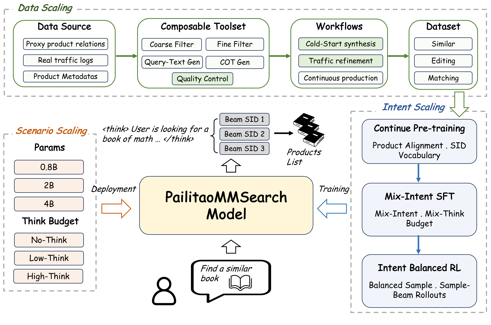
Figure 1 应按依赖关系阅读，而不是把三个彩色框当作独立功能开关。上方先从代理商品关系、真实流量和元数据进入可组合工具，经过冷启动合成、流量修炼或持续生产，形成三类意图的数据。右侧训练链再由商品领域预训练进入混意图、混思考预算的监督微调，最后用意图均衡强化学习更新同一策略。中间模型接收用户的图文请求，输出可选推理和多个商品标识，图中的三条束分支体现候选集合接口。左下的不同参数量与推理预算属于部署运行点，不能反过来当成三个意图各自拥有的专家。绿色、蓝色和橙色箭头分别对应监督供给、训练与部署选择，说明有能力以后才谈如何按场景使用。图中的找书示例只是共同接口的示意，并非一项独立的在线效果实验；同样，简短思考块不表示服务会永远只产生图中那样的少量字。真正可迁移的是这条“数据支持行为、训练形成统一行为、配置决定服务成本”的因果顺序。若仅复制左下的预算提示而没有相应混预算训练，不能据此假设自己的模型也会稳定地产生同样的质量成本曲线。图里模型输出直接连接产品列表，也应和正文描述一起读：有成熟流水线的应用仍会在最终展示环节交错结果，整体图是检索组件抽象而不是完整线上架构图。
数据侧有五种工具。粗过滤用类别、属性、行为和轻量多模态信号去掉明显不合理的商品对；细过滤验证目标关系究竟是相似、属性编辑还是互补；查询文本生成负责从代理关系合成指令，或对真实查询作最小修复；推理生成按预算提供精简或较长解释；质量控制对最终完整实例应用相应准则。便宜检查在前，昂贵视觉语言检查在后，真实用户文字尽量保留。 不思考数据跳过推理生成。冷启动通常需要合成查询，真实流量有文本时不必重复改写。所有路径最后都必须经过质控，而不是仅在最初训练集上清洗一次。
以红色短袖改成长袖为例，类别与颜色是保留条件，袖长是变化条件。细过滤先确认商品对只在目标属性上合理变化，再生成“同色长袖”的请求。若目标同时换成蓝色或另一类别，即使两件商品看起来很像也不应作为正样本。搭配关系的准则则相反，类别变化可能是必要条件。工具接口可以复用，关系定义与阈值必须按意图配置；这避免了把同一个相似度阈值错误地套在所有任务上。
2.2 领域预训练与混意图混预算微调
CPT 先补齐平台商品分类、属性与标识词表知识，任务混合商品标题理解、标识预测、属性预测、用户行为预测和一般语言建模。它的作用是让骨干进入更适合电商标识空间的初始化，而不是直接完成三种检索关系。之后 SFT 让一个检查点同时学习相似、编辑和搭配查询到目标标识的映射，并混合三种推理模式。不思考直接发出标识；简短思考抽取决定性图像和文本条件；较长思考允许更完整的关系比较和约束推理。训练时的意图切片用于配数据，推理时不会额外输入意图标签。
这两种混合不要混淆：意图混合决定模型能解决什么关系，预算混合决定相同请求可以用多大计算量处理。用户不需要先选择“我是编辑意图”，但应用仍可以指定思考模式。统一模型也不要求各意图始终互利，加入搭配监督可能稍微降低编辑质量；因此后文要看分意图消融。一个统一接口能够减少意图路由工程，但不能消除训练分布和目标权重之间的冲突。
2.3 意图均衡强化学习与 Sample–Beam
强化学习阶段防止高流量意图支配更新，先在操作切片之间形成混合分布：
符号解释：$t$ 是训练操作切片，$T$ 为切片数，$\mathcal D_t$ 是对应数据分布，$\beta_t$ 是采样混合权重。每个切片使用自己的相关性奖励准则，但所有轨迹更新同一个模型。这里不是服务端专家路由，也没有为每个意图保留一套独立模型。混合权重与奖励共同影响更新分布，只有保持初始化、意图混合和评价一致，才适合比较下面两种候选生成方法。
普通 GRPO 祖先采样完整输出，而工业生成式检索会对商品标识束解码。作者将一次轨迹分为随机思考前缀和确定性标识束两部分：
符号解释：$p$ 是预算提示，$h_g$ 是第 $g$ 条采样思考前缀，$N$ 为前缀数；$y_{g,b}$ 是每个前缀下第 $b$ 条商品标识束分支，$B$ 为束宽；$\tau_{g,b}$ 为前缀与标识串接的轨迹，$R_{g,b}$ 是由切片准则 $r_t$ 评出的候选奖励，旧策略参数 $\theta_{\mathrm{old}}$ 在收集轨迹时冻结。此式的 $b$ 是分支下标，不是后面配置中的推理预算。
同一查询得到 $NB$ 条分支轨迹，在这些分支上归一化奖励，再将类似 GRPO 的裁剪代理目标施加到思考与标识 token。共享前缀累积其各商品分支的优势，束选择本身不求导。标识分支由确定性束搜索选出，因此这是束条件代理，不是对原策略无偏的在策略估计。 它要对齐的是训练时标识候选的产生方式，而不是更换奖励函数。不能把最终增益全部解释为标准 GRPO 的方差下降，也不能把每条共享前缀当成互相独立采样的完整轨迹。
2.4 场景配置与服务
系统层目标把质量、尾延迟和显存放在一起：
符号解释：$a$ 是应用场景，$\mathcal D_a$ 是其请求分布，$z$ 是输入隐含的检索关系，$r_z$ 是相应相关性准则；配置 $c$ 包含模型规模 $m$、推理预算 $b$ 和束宽 $B$，$L_{95}$ 为 P95 延迟，$M$ 为服务显存，$\tau_a$ 和 $\mu_a$ 是允许上限。这是系统优化问题的表述，不是作者直接训练的单一可微损失。实验主要报告平均响应时间，不能据此声称已经逐项证明所有场景满足这个尾延迟约束。
服务选择一个独立训练的模型，再通过提示指定预算；思考块结束后固定前缀，对标识做束解码。三个参数规模是不同检查点，不能当成同一模型动态减宽。论文部署在拍立淘多模态搜索、找搭配和找同款等应用。已有成熟链路的入口把新组件的商品与旧结果在展示阶段交错，线上比较时固定服务配置。训练时保留关系切片，服务时去掉意图分类器，部署时仍保留资源配置，这三件事可以同时成立。
3. 实验结果
3.1 数据与自动评估
训练代理与冷启动数据在相似、编辑、搭配上分别为二千四百万、二千四百万和一千二百万条，真实流量修炼分别一百万、八百万、一百万。自动测试是较晚窗口的五百零二、七百七十二和三百七十一条查询，查询目标重复对被跨集合移除。人工校准集合分别四万、两万和四万，与模型训练和自动测试分离。默认控制消融采用二十亿参数、较长思考，主系统对比则采用简短思考，不应把两者当作同一配置的精确重复。
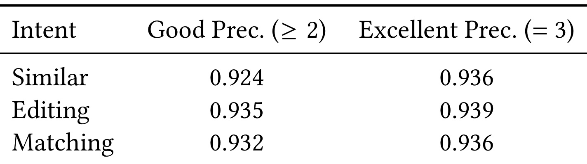
Table 3 的行是三种关系，列是自动判为好结果和优秀结果时的精度。好结果对应分数至少二，优秀对应三分；相似关系的两个精度为零点九二四和零点九三六，编辑为零点九三五和零点九三九，搭配为零点九三二和零点九三六。这说明作者并非直接相信通用视觉语言模型的输出，而是对照互不重叠的人类标注调整准则。可是精度高并不等于完整评价无误差：表里没有同时给召回率、各分数混淆矩阵和置信区间，也不能推出自动裁判对每个模型都没有偏好。后续主表的好结果率和优秀率是被该裁判判定的比例，必须与人工校准精度分开。离线指标在三意图之间做宏平均，避免测试查询数最多的编辑关系支配均值，同时也意味着它不是按真实流量加权的用户收益。这个定义直接影响主表结论：搭配上的显著优势能抵消其他两类落后，但业务入口未必具有同样的意图分布。训练质控和奖励也依赖模型判断，即使不同模型配置减少了自评冲突，相关错误仍可能沿链条传播，人工校准只降低这种风险而没有消除它。
3.2 总体检索质量
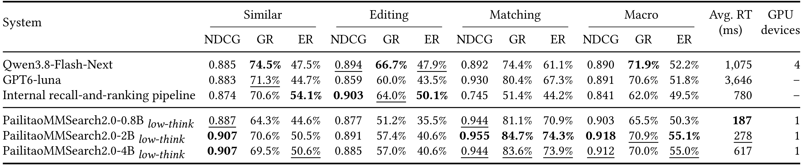
Table 4 同时列出三种意图与宏平均的排序质量、好结果率、优秀率，以及平均响应时间和设备数。二十亿参数简短思考模型的宏 NDCG 为零点九一八、宏优秀率百分之五十五点一、平均响应二百七十八毫秒，一张 GPU。内部召回排序链路相应为零点八四一、百分之四十九点五和七百八十毫秒。两者优秀率差五点六个百分点，响应时间约减少百分之六十四点四；这里时间是平均值，不能替代 P95。优势集中在搭配：新模型优秀率七十四点三，内部链路四十四点二，相差三十点一个百分点。但相似是五十点五对五十四点一，编辑四十点六对五十点一，均落后内部链路。两个改写加全文检索基线的编辑优秀率也高于新模型。因而合理结论是当前三意图等权下整体更好，尤其改善互补关系，而不是每类请求全面领先。零点八十亿到二十亿，宏优秀率提高四点八个百分点，延迟增加九十一毫秒；继续扩大到四十亿简短思考，宏优秀率反而略降至五十五点零，延迟升至六百一十七毫秒。设备数量也不是全部资源账单，内部链路与远程模型的部分设备项未列，论文没有提供统一的总费用估计。生产迁移应保留不同意图的质量底线，而不是用宏平均掩盖同款用户体验下降。
3.3 数据规模与质量
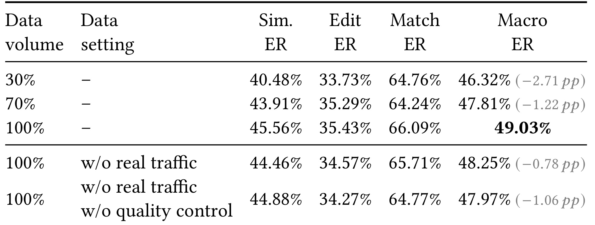
Table 5 把被接受语料从百分之三十扩至全部，保持来源和意图分布，宏优秀率从四十六点三二升到四十九点零三，差二点七一个百分点。相似提高五点零八，编辑一点七零，搭配一点三三，说明新增数据边际作用不同；搭配从三成到七成还先下降，不能概括成每个意图随规模单调上升。保持全量语料但去掉真实流量，宏优秀率降到四十八点二五；进一步移除质控后为四十七点九七。两步合计下降一点零六，其中质控的追加贡献零点二八，搭配下降零点九四最明显，相似反而回升零点四二。这个对照支持真实流量和终端质控对整体有用，却没有证明质控在每个切片都获益。表中每行相对差是百分点，不是乘法相对百分比；全部消融停留在监督模型阶段，不能把这里四十九点零三直接与主表强化学习后的五十五点一当作只改变数据量的对照。可迁移的做法是分别控制数据数量、真实表达与筛选准则，而不是把更多、更真实、更干净捆成一次改动。数据生产还调用强模型生成、验证和奖励，表只呈现质量，没有量化每新增一条合格数据的模型费用和人力成本；是否值得扩大仍须结合自己的生产单价与失效样本比例。
3.4 领域预训练与跨意图迁移
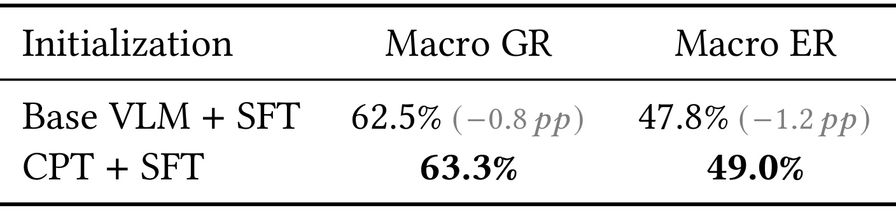
Table 6 比较原始视觉语言初始化加监督微调，与先经过领域预训练再用相同下游配置微调。宏好结果率从六十二点五到六十三点三，宏优秀率从四十七点八到四十九点零，分别增加零点八和一点二个百分点。它隔离的是初始化差别，不能解释为每一项 CPT 子任务都独立有效，也没有区分额外训练 token 和领域知识本身的贡献。这个较小但稳定方向的整体收益，与系统先掌握商品分类和标识空间再学习多意图的顺序一致；不过表中只给一个宏平均，没有呈现三种意图各自改善多少和随机种子区间。原文将域内知识、商品标识、属性及行为任务共同混入预训练，所以复现时应保存整个混合设置。若只训练商品标题后宣称复现该对照，初始化覆盖范围并不相同。对已有成熟商品模型的团队，还需评估它原本是否已经具备相同目录知识，不能把对通用骨干的一点二个百分点直接外推到任何现成模型。表内的四十九点零是舍入值，与其他监督消融的四十九点零三属于相近设定，不应据末位差异推断训练不稳定或复现实验已经完成。
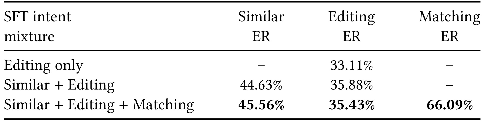
Table 7 的列对应各关系的优秀率，行按编辑单任务、相似加编辑、三意图混合逐步扩充。单独编辑为三十三点一一；加入相似监督后编辑升到三十五点八八，增加二点七七个百分点，同时建立四十四点六三的相似能力。再加搭配，得到六十六点零九的搭配质量，相似进一步到四十五点五六，但编辑回退到三十五点四三，比上一行低零点四五。三意图方案相对编辑单任务仍高二点三二，却不能声称新增搭配没有任何负迁移。这个结果说明统一表征能在部分关系之间转移，也说明额外关系会争夺模型容量或优化权重。横线表示该行没有对应任务成绩，不是零分；因此不能计算所有行的三任务宏均值再比较。读者应关注旧能力在新增任务后保留了多少，而不只关注新任务终于有了成绩。真正服务上线还需结合真实流量比例和业务最低要求挑选意图混合；论文没有通过该表给出通用最佳配比。若已有编辑入口要求严格保持某些属性，零点四五个百分点的退化可能比宏平均改善更重要，应该建立回归集合并检查是否集中在颜色、类别或细粒度材质等条件上，而不能只凭平均幅度小就忽略。
3.5 强化学习和服务一致性
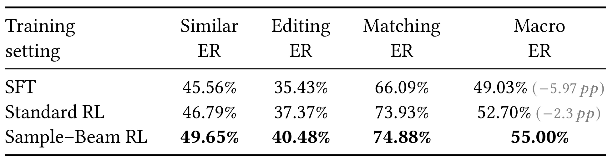
Table 8 在匹配的初始化、意图混合和奖励评价下比较监督模型、标准强化学习和束条件变体。宏优秀率依次为四十九点零三、五十二点七零、五十五点零零。标准强化学习贡献三点六七个百分点，再改 Sample–Beam 追加二点三零，完整相对 SFT 增加五点九七。后一个数绝不是单独束采样贡献。分关系看，标准强化学习在搭配上从六十六点零九到七十三点九三，贡献七点八四，已取得大部分搭配收益；束条件版本再到七十四点八八，增加零点九五。反而相似和编辑从标准版到束版分别再增加二点八六和三点一一，显示候选产生方式的作用并非均匀分配。该表支持训练服务候选对齐有额外价值，但没有逐项区分束宽、共享思考前缀、候选相关性与奖励归一化改变的独立影响。奖励函数在两种强化学习中匹配，所以不应把差异写成更强的评价器带来增益。另一方面，确定性束分支不服从完整祖先采样分布，结果好不代表代理估计无偏。工程采用前应比较相同总候选数、同等奖励调用和同等计算预算，确认增益不是用更多验证换来；论文在这里报告质量，并未给训练耗时或每个版本的成本表。
3.6 模型规模与推理预算
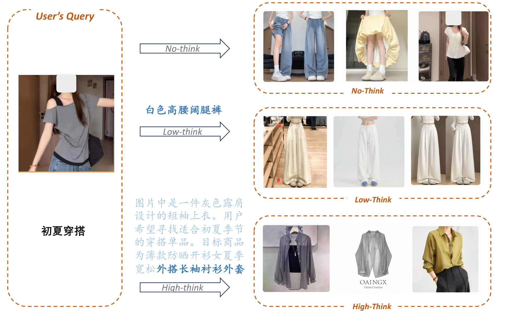
Figure 2 展示一个带上衣图像的初夏穿搭查询。不思考直接产生候选，简短思考提取白色高腰阔腿裤等简洁条件，较长思考写出更完整的图像和季节分析，再展示不同服装候选。图中中文文字是作者示例的一部分，并非笔记额外生成的解释，也不是模型稳定行为的统计证明。这个案例有助于理解“预算会改变中间解释和候选集”的接口，却不能单独证明较长推理更正确；尤其自由指令本身比较宽泛，多种搭配都可能合理，长解释也可能增加用户未明确要求的约束。图里三行结果没有人工逐个标分、随机重复或对照置信区间，因此不能把视觉上更丰富的搭配当成客观提升。下表才提供跨测试集的预算结果，而且确实发现长思考并不总是获益。工程上应把示例当作诊断入口：检查推理有没有无依据改变目标类别、保留条件是否丢失，以及具体商品是否满足自己写下的约束。若模型写出合理说明却返回错误商品，问题可能在标识生成；若说明先误解意图，则可能在图文理解。这样的分层诊断比把所有失败都归为“推理不够长”更符合本文的系统结构。
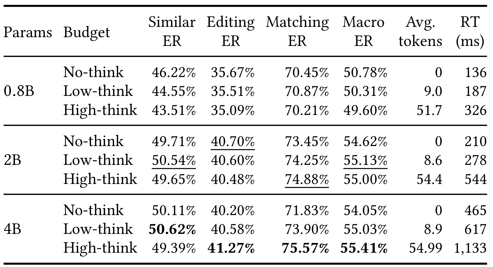
Table 9 交叉比较三个独立模型和三种推理提示。零点八十亿模型不思考时宏优秀率五十点七八、响应一百三十六毫秒；简短和较长思考依次降到五十点三一与四十九点六零，时间升到一百八十七和三百二十六毫秒。二十亿模型不思考为五十四点六二、二百一十毫秒，简短思考用平均八点六个推理 token 达到五十五点一三、二百七十八毫秒；较长思考用五十四点四个 token，宏优秀率略降到五十五点零零、时间五百四十四毫秒。四十亿较长思考才达到最高宏优秀率五十五点四一，延迟一千一百三十三毫秒。它相对二十亿简短思考只高零点二八个百分点，代价约四倍平均时间。更长推理主要帮助这个较大模型的编辑和搭配，相似优秀率却仍下降。表内最高编辑与搭配也不能覆盖相似最优，所以选择运行点必须面向入口意图分布。这里平均推理 token 不含整个视觉输入和标识解码，不能直接当作总服务费用；平均响应也不能替代尾延迟和峰值吞吐。作者给出的是实测九个点，并没有拟合一种普适规模律，也没有证明自动动态预算比固定预算更优。
3.7 线上结果与裁判边界
论文报告约百分之十流量进入实验组，每次实验约十四天。在拍立淘多模态搜索，商品页面浏览相对增加百分之十七点九零，独立用户商品页浏览增加十三点六二，交易增加二十七点零四，成交总额增加八点九四；点击率增加零点五八个百分点、转化率增加零点三七个百分点，均报告 $p<0.05$。前四者是相对百分比，后两项是百分点。线上测量包括部署配置与结果交错方式，不是把新检索模型孤立出来的组件因果实验。论文称对应场景已全量上线，这是作者报告，本轮未独立访问内部实验平台核验。
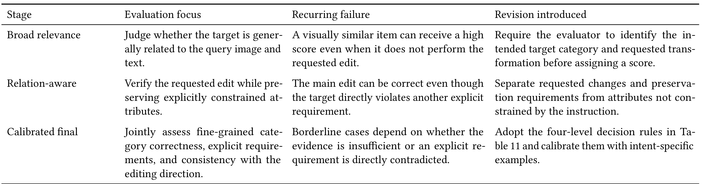
Table 10 是附录的评价器治理记录，每行不是一个模型的测试分，而是一次准则修订。初版只判断与图片及文本总体相关，会给“看着相似却没完成编辑”的目标高分；于是加入目标细分类目和要求变化识别。第二版要求执行编辑并保持明确条件，又发现主要编辑满足但其他显式要求被违反的情况，因此进一步区分请求变化、保留条件与未约束属性。最终版综合细分类别、明确要求与编辑方向，将证据不足和明确矛盾分开。这些单元格中较长的英文描述属于原表内容，不是相邻正文混入。它说明数据质量不是某个强模型天然提供的，而要通过独立人工标注追踪重复错误后迭代准则。可是这张表只展示决策结构，没有提供完整生产提示和所有示例，也没有量化每轮准则改变让测试结果上升多少。其价值在于提供可审计的误差类型，而不在于证明裁判从此没有偏差。由于同类评价原则用于数据接受、奖励和离线测试，还应警惕系统不断适配评价准则却未同步提高真实用户价值的风险；线上随机实验提供另一层证据，但不能替代持续的人类质量复查。
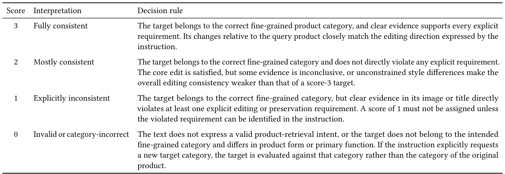
Table 11 将相似度判断改为条件验证。三分要求正确细分类别且所有明确要求都有清晰支持，编辑方向也吻合；二分允许核心编辑满足、没有直接违反要求，但局部证据不足或未约束风格差异使整体稍弱；一分要求能够指出图像或标题中直接违反的某条显式编辑或保留要求；零分用于无效商品检索意图，或细分类别和主要功能不符。若用户明确要求改成另一目标类别，就按新目标类别评价，不能机械保留原图类别。以同色短袖换长袖为例，红色长袖且证据明确可得三分，袖部遮挡但没有矛盾可能得二分，蓝色长袖违反颜色保留得一分，无关外套则可能为零。二分与三分都通过数据相关性门槛，只有三分计入优秀率，因此两项指标有不同严格程度。值得保留的是“无证据”与“有反证”的区分：评价器不能因看不清袖子就自动判明确违反，也不能自行添加用户未约束的风格偏好。原文没有展示全部生产提示与示范，复现者需要重新标注校准，而非照抄四行定义就声称得到了相同裁判。该表也是为何平均优秀率不是纯粹视觉相似性的直接说明。
4. 总结
PailitaoMMSearch2.0 最有价值的贡献是一套解除监督、意图和资源绑定的系统组织方式。它把多模态商品关系转成可验证的数据工具流程，用分阶段训练建立统一的图文到标识接口，再以模型规模和思考预算暴露服务取舍。Sample–Beam 的改动很具体：思考部分采样，标识部分束解码，训练不再完全忽略线上候选集合的生成方式。对搜索团队而言，这比“加入思维链”更可操作，因为它明确了要在哪个分段保留随机探索、在哪个分段贴近候选产生机制，以及一个共享前缀如何获得各商品分支的反馈。
但证据也给出了重要收敛条件。第一，开放查询只在一个电商领域的三种关系上验证，模型可能对未覆盖关系失效，不能从自由语言接口推出通用购物理解。第二，宏平均领先主要由搭配大幅提高驱动，相似和编辑仍有明显落后；任何同款或编辑入口都需要自己的质量回归门槛。第三，自动裁判经过独立人工校准仍有错误，质控、奖励和测试可能共享错误结构。第四，确定性束分支对应有偏的代理优化，质量提升不意味着理论估计已经严格成立。第五，线上成交收益属于含资源配置与结果交错的整套部署，不能单独归因给训练算法，也不宜移植成其他平台的预期增长。
资源方面同样有四个层次不能合并。表中的一张 GPU 不等于整个服务只需要一张卡；平均推理 token 不包含全部输入和解码；平均响应时间不是尾延迟；数据生产和强化学习还需要昂贵的筛选与奖励模型。论文没有给全链条统一费用和训练墙钟。零点八十亿长思考退化、二十亿简短预算更合算、四十亿长预算仅小幅提高宏质量，都说明计算量应按问题性质分配，而非默认越大越好。三个规模分别训练，也意味着模型发布、目录更新和回归测试要维护多个检查点，不能把“统一接口”误读为没有运维复杂度。
对推荐系统的迁移应从关系定义开始。若现有召回只把共现当正例，可以先区分替代、搭配和属性编辑，再为每种关系建立明确保留条件与变化条件。这样做不要求立刻替换主模型，也能改善多模态训练数据。对大模型后训练，本文提供一个值得验证的例子：最终动作空间是目录候选集，训练轨迹的采样方式可以围绕服务解码重构。但共享前缀和相关分支会改变信用分配，需报告相同总候选与评价调用下的结果，不能只比较固定训练步数。对用户侧，生成解释应服务于判断约束，而不是给错误候选提供事后合理化文本。
后续优先做三个对照。首先固定数据规模、意图比例和评价器，独立比较普通采样、相同候选数量的束采样及共享前缀版本，测清奖励调用、训练时间和候选多样性。其次按意图、细分类别和显式约束建立人工回归集，同时报告好结果、优秀结果及条件违反率，检查宏平均改善是否伴随特定用户需求退化。最后在相同入口随机比较若干质量成本运行点，保留平均和尾延迟、并发吞吐、显存及端到端费用，并把纯检索改变与展示交错策略分开实验。目录与流量持续变化时还要定期重校裁判，检验新商品、长尾属性与季节需求是否偏离原校准集。
本轮结论限于原始论文可核验的设计和作者报告的结果，没有运行作者训练、访问其内部数据或独立验证线上显著性。未核验独立实现意味着复现还缺生产提示、完整数据生成配置、模型训练细节和服务工程。现阶段适合保留其问题分解、消融关系和负结果，按自己系统的瓶颈选一个接口验证；不宜仅凭交易峰值就推断生成式系统能无条件替代已有召回排序链路。